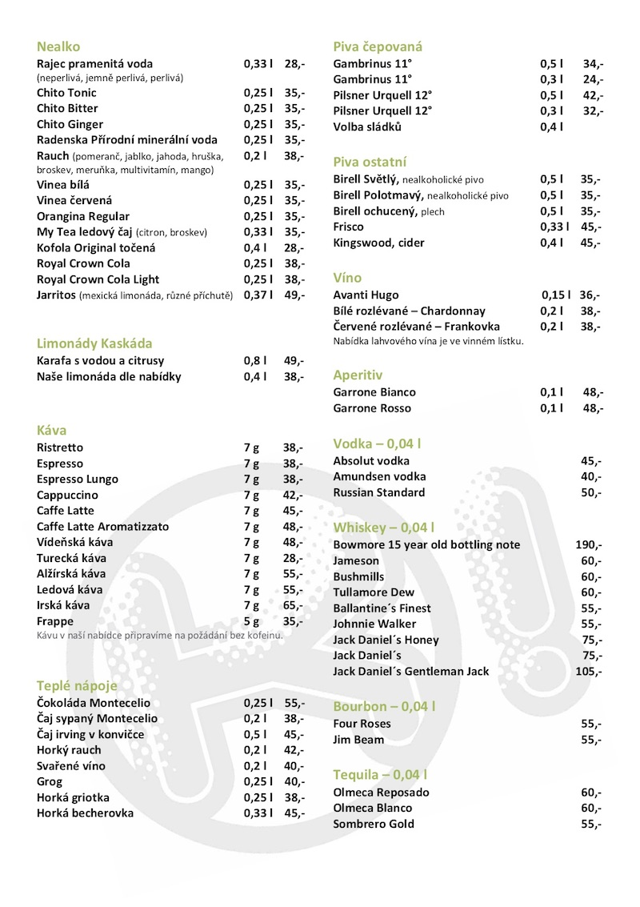

Aktuálně
O nás
Jídelní lístek
Nápojový lístek
Alergeny
Kde nás najdete
Kontakty:
Tel.: +420 111 222 333
email.: pizzafox@gmail.com
Sociální sítě:
.jpg)


Aktuálně
Nově si Hawaii pizzu můžete vychutnat s extra porcí ananasu. Stačí jen při objednávce poprosit o možnost
"extra ananas" a je to!
Prodlužujeme otevírací dobu. V sobotu nás můžete navštívit do 22:00,
nebo si udělat objednávku.
1. 1. 2022 bude otevřena nová pobočka Pizza Fox ve Štěchovicích!
O nás
Pizza Fox se již dlouhá léta zaměřuje na výrobu kvalitní a chutné pizzy přímo k Vám domů. Pečlivě vybíráme každou ingredienci, abychom při jejich smíchání docílili jedinečného zážitku. Naši kuchaři jsou mistři z celého světa. Máme tradici již od roku 1982. Tento projekt má za cíl výrobu webových stránek naší pizzerie v rámci projektu Code like a girl.
Náš kuchařský tým se skládá ze tří členů.
Tohle je Mario, náš vrchní kuchař.
Pracuje u nás již od roku 1990 a vyrostl na Neapolském předměstí v rodině místního pizzaře.
Je to mistr svého oboru a věříme, že i Vás jeho pizza uchvátí.

Tohle je Mario, náš vrchní kuchař.
Pracuje u nás již od roku 1990 a vyrostl na Neapolském předměstí v rodině místního pizzaře.
Je to mistr svého oboru a věříme, že i Vás jeho pizza uchvátí. Když budete mít štěstí, vypráví návštěvníkům
vtipy a buďme upřímní... není nic lepšího než Mariovy vtipy. Když se na něj usmějete, úsměv Vám vrátí.

Tohle je Luigi. Je to Mariův syn a stejně jako
Mario zdědil umění výroby pizzy. Je z něj cítit mladistvá energie a charisma a stejně tak působí
i jeho pizza. Nově se zaměřuje také na výrobu drinků u nás v pizzerii a také občas zajišťuje
zábavu pro návštěvnice, díky svému tangu, které se naučil na jeho stáži v Argentině. Má zkrátka
temperament.

Tohle je Paola. Uklízí od nás úplně od začátku
naší pizzerie. Je velmi příjemná a usměvavá a všichni návštěvníci ji mají rádi. Podlahy leští dokonale
a okna ještě dokonaleji. Vyrostla v rodině italských leštičů podlah a celý život na své schopnosti
pracovala, aby návštěvníkům Pizza Fox předvedla co nejlepší práci. Občas hostům nechává sušenky
na záchodě, což je příjemné, když tam věci zrovna jedou podle plánu.
Zpět domů
Jídelní lístek

Nápojový lístek

Zpět domů
Alergeny
 Zpět domů
Zpět domů
Kde nás najdete
Najdete nás na adrese Choceradská 2748/25, Praha 4 Záběhlice.
MHD se k nám dostanete autobusy 118, 135 a 138 na zastávku Sídliště Spořilov.
Odkaz na mapu:

Majitelé: Karolína Mejzlíková a Klára Kolevská